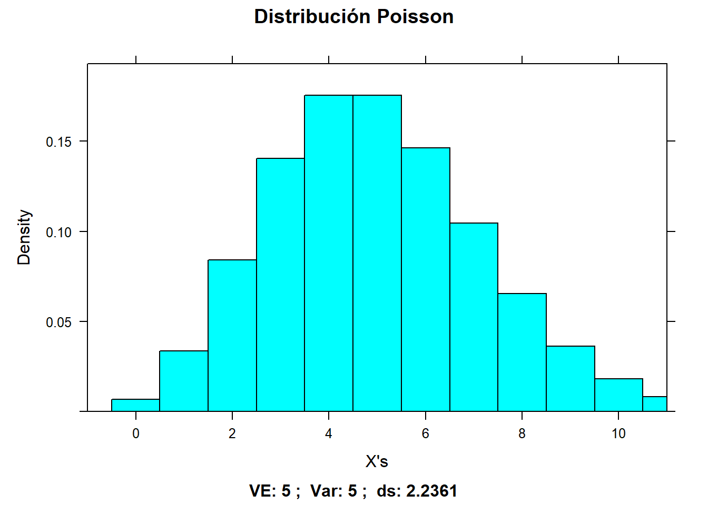

library(dplyr)
library(ggplot2)
library(mosaic) # Gráficos de distribuciones
library(cowplot) #Imágenes en el mismo renglónejercicio Poisson
ejercicio
Suponemos que estamos en temporada de invierno y queremos ir a esquiar antes de diciembre. La probabilidad que abran las estaciones de esquí antes de diciembre es del 5%.
De las 100 estaciones de esquí, queremos saber la probabilidad de que la estación de esquí más cercana abra antes de diciembre. La valoración de esta estación de esquí es de 6 puntos.
Cargar librerías
Cargar funciones personalizadas
source("https://raw.githubusercontent.com/rpizarrog/probabilidad-y-estad-stica/master/Agosto-Diciembre%202022/funciones/funciones%20para%20distribuciones.R")
Attaching package: 'gtools'The following object is masked from 'package:mosaic':
logit
Attaching package: 'plotly'The following object is masked from 'package:mosaic':
doThe following object is masked from 'package:ggplot2':
last_plotThe following object is masked from 'package:stats':
filterThe following object is masked from 'package:graphics':
layoutInicialiazar variables
media <- 5¿Cual es la probabilidad de x = 6?
resultado <- f.poisson.all(media = media)
resultado$g.hist
prob <- dpois(x = 6, lambda = media)
prob[1] 0.1462228Ejercicio de llamadas
Un centro d servicio (call center) recibe en promedio 2 llamadas por minuto para atención de clientes.
¿Cuál es la probabilidad de recibir exactamente una llamada en un minuto?
Inicializar variables
media <- lambda <- 2
x <- 1La probabilida de f(x= 1)
prob <- dpois(x = x, lambda = media)
prob[1] 0.2706706Usando la función f.pois.all()
resultado = f.poisson.all(media = media)Densidad
resultado$g.hist.plotlyAcumulado
resultado$g.acum.plotlyTabla de distribución
resultado$tabla x f.x F.x
1 0 0.13533528 0.1353353
2 1 0.27067057 0.4060059
3 2 0.27067057 0.6766764
4 3 0.18044704 0.8571235
5 4 0.09022352 0.9473470